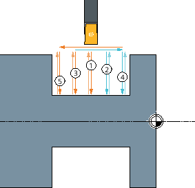
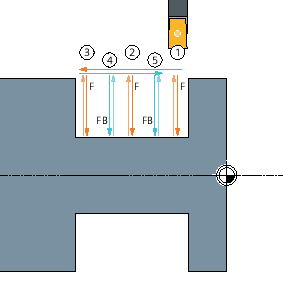

Funktion
Mit dem Zyklus "Einstich" fertigen Sie symmetrische und asymmetrische Einstiche an beliebigen geraden Konturelementen.
Sie haben die Möglichkeit, Außen- oder Inneneinstiche längs oder plan zu bearbeiten. Mit den Parametern Einstichbreite und Einstichtiefe bestimmen Sie die Form des Einstiches. Ist ein Einstich breiter als das aktive Werkzeug, wird die Breite in mehreren Schnitten abgespant.
Beim wechselseitigen Einstechen wird das Werkzeug bei jedem Einstich um maximal 80 % der Werkzeugbreite verschoben:
Beim Kammstechen (nur Einstich 1) wird im ersten Schritt in regelmäßigen Abständen ins volle Material gestochen und anschließend die stehen gebliebenen Stege mit einem höheren Vorschub FB (Vorschub zum Stechen der Stege) bearbeitet. Es wird auf der Seite des Bezugspunktes mit der Bearbeitung begonnen:
| | Software-Option Um die Funktion "Kammstechen" zu nutzen, benötigen Sie die Software-Option "Kammstechen". |
Der Abstand der Einstiche ins volle Material wird so berechnet, dass die Breite der verbleibenden Stege maximal 80% der Werkzeugbreite beträgt. Ist die Stecherbreite abzüglich des Werkzeugradius kleiner als dieser Prozentsatz wird dieser entsprechend reduziert.
Für den Einstichgrund und die Flanken können Sie ein Schlichtaufmaß angeben, bis auf das beim Schruppen abgespant wird.
Die Verweilzeit zwischen Einstechen und Zurückziehen ist in einem Settingdatum festgelegt.
| | Maschinenhersteller Beachten Sie hierzu bitte auch die Angaben des Maschinenherstellers. |